|
Mozilla/MachV: Mail: Security |
UI Specification
|
|
Encryption and Signing |
Last Modification:
|
|
Author: Jennifer Glick |
Status: Mostly Complete |
||||||||||
|
Quicklinks |
Feature Team
|
** Note: Not all security related icons in this spec are final. Some are temporary placeholders until final icons are completed by a graphic artist.**
The S/MIME features of Mail enhance the security of your emails. Specifically, these features:
To activate these security features, you need to obtain a digital
certificate. Certificates are issued by independent certification
authorities (CAs).
The technology works as follows: a sender encrypts an email using the
recipient's certificate, and signs it using his/her own private key.
The recipient verifies the signature and the integrity of the message
using the sender's certificate, and decrypts it using his private
key.
In order to send encrypted emails, you must have certificates for
each of the recipients.
Make the signing and encryption security features easily accessible to users who want to use mail security features, while making them non-intrusive for those users less interested in these features.
Users in a corporate environment where security settings maybe set by a system administrator, as well as individual users who are concerned about security issues.
|
Basic Tasks |
|
|
Intermediate Tasks |
|
|
Advanced Tasks |
|
|
|
Button |
Menu |
Account Settings |
|
Mail Compose: Security dropdown menu button. |
Mail Compose: Options: Security. Per message encryption and signing options. |
Security Panel |
In order to send digitally signed emails, you must have your own Digital Security ID (digital signature, public key, private key). In order to send encrypted emails, you must have certificates (digital signature, public key) for each of the recipients.
Security features are per account. A user can setup different accounts to use different certificates. For example, a user might use a corporate certificate for their work account and a personal certificate for a personal account, and maybe no certificate for a third account.
The user's security settings for a particular account determines the default security behavior when composing and sending messages. Users can change security settings on a per message basis.
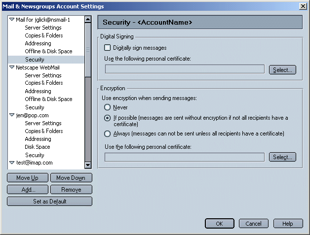
Local Certificate Database is currently searched for certificates. Potential future feature, allow users to choose LDAP directories to search for certificates.
Encryption is not available for newsgroup accounts.
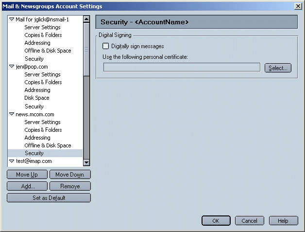
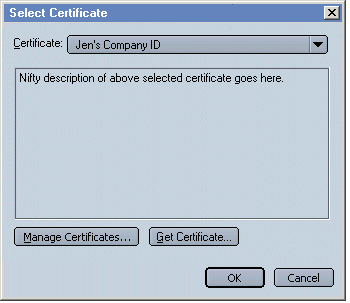
Users can set up global security settings per account in the Mail & Newsgroups Account Settings dialogs. They can also use the Options: Security menu or the Toolbar Security dropdown button, to change security settings on a per message basis. Changes are reflected visually in the compose window as appropriate (Send icon, status bar icon, Security icon).
Defaults in the menus are set based on the user's security settings for the account. If the user changes these settings using the Options menu or Toolbar dropdown button, the changes only apply to the current message. Once the user enables a particular security feature for a particular message, the window should behave as appropriate as outlined in the rest of this spec.
The Message Compose window toolbar contains a security combo
menu/button. Clicking the button activates the default action,
opening the "Message Security" dialog (see below). Clicking on the
arrow to the right of the button displays a menu.
The Toolbar security icon changes to show the availability of
certificates for recipients of the current message (described later
in this spec) and hence, if the message can be sent encrypted or
not.
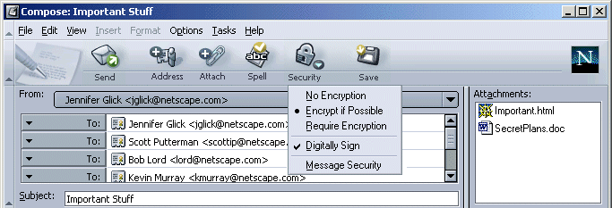
Whether options can be unchecked when the global account setting
is set to "Always" will be controlled by an
"Allow Always Encrypt Override" preference which will not be exposed
in the preferences UI. The hidden preference is intended to be
controlled using Mission Control Desktop (MCD). The hidden preference
will not apply in the "Never" or "When Possible" cases.
Clicking directly on the Security Toolbar button, or selecting "Message Security" from the Options: Security menu or the Toolbar Security dropdown button, opens the "Message Security" dialog.
This dialog displays security info regarding the current message. Recipient's certificate status is listed. This provides the user with status regarding the security of the message (if the message can be sent encrypted) and certificates of individual users.
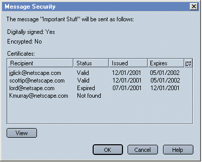
Note: This is a mock up only. Security team to decide what columns are appropriate to display.
If the user selects a security feature from the menu and they have not yet defined a valid certificate in their security account settings, a dialog opens. "You need to setup a personal certificate before you can use this security feature. Would you like to find out how to do this now?" (Wording TBD, Sean Cotter). If they select "Yes", a browser window gets focus and displays a help page which explains how to setup and use the security features.

Certificates for recipients are retrieved during auto-complete. They can be associated with entries in the user's local address books, an LDAP directory, or a certificate database.
As the email addresses of recipients are added, the client searches for valid certificates. If valid certificates are available for all recipients, the security icon displays an "intact certificate" (TBD) in the top right corner. If there is a problem with at least one of the recipients certificates, a red "X" is displayed. A problem could mean either a certificate for a recipient is not available, or an existing certificate is expired. Clicking on the Security icon opens the "Message Security" dialog (above) which provides additional information about the recipient's certificates and where the problem has occurred.
If the client has found a certificate for all the current recipients, the "Send" button is modified to incorporate a "will be encrypted" icon (TBD).
Similarly, if a valid certificate for all the current addressees is not available, a "broken encryption" icon (TBD) is displayed on the "Send" button, indicating to the user that the client wants to send encrypted, but can't.
Different possible scenarios are illustrated below.
User has account settings set for no encryption and no signing. The Security icon is available in the Toolbar (and the Options menu). The feature is accessible and discoverable for users interested in the feature, yet not distracting for users who do not want to use the feature.
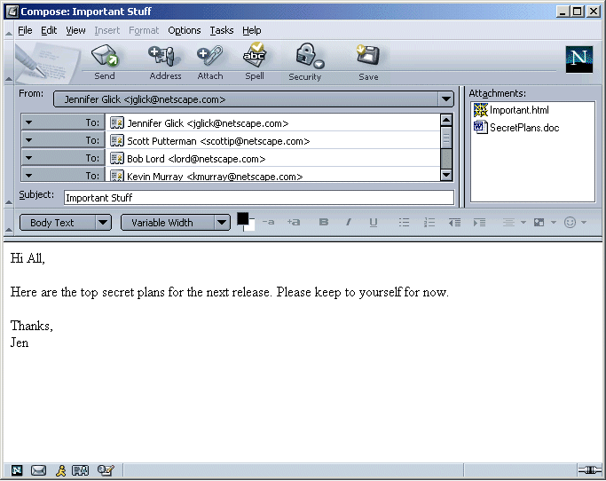
User has account settings set to "Always Encrypt". Message cannot be sent unless certificates for all recipients are available. Certs for all users Are available.
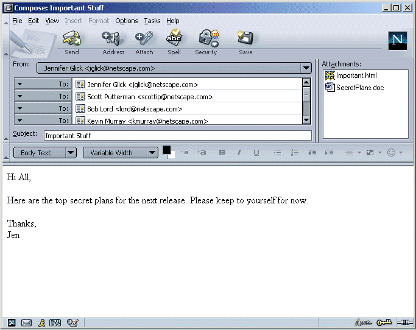
User has account settings set to "Always Encrypt". Message cannot be sent unless certificates for all recipients are available. A valid certificate for some recipients is found, an invalid certificate or no certificate is found for some recipients.
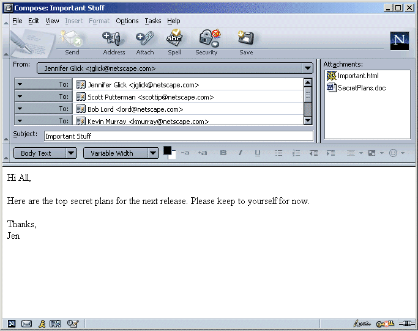
User has account settings set to "Encrypt if possible". Message can still be sent if certificates for all recipients are not available. A valid certificate for all recipients is available.
User has account settings set to "Encrypt if possible". Message can still be sent if certificates for all recipients are not available. A valid certificate for some recipients is found, an invalid certificate or no certificate is found for some recipients.
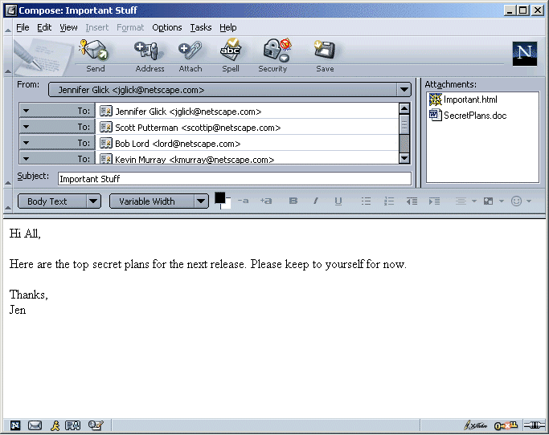
User has account settings set to enable digital signing only.
The status bar is used to indicate whether a message will be digitally signed and/or encrypted when sent.
When digitally sign is enabled, the "signed" icon appears in the status bar. When digitally sign is not enabled, no icon appears in the status bar.
An "encryption" icon appears when the user has requested a message be sent encrypted and the message can be sent encrypted because the necessary recipient certificates are all available. A "broken encryption" icon appears when the user has requested a message be sent encrypted but the message can not be sent encrypted because the necessary recipient certificates are not all available. No encryption certificate is shown if encryption is set to "Never/None" for this account or message.
Indicate to recipient if a received message was sent signed and/or encrypted.
When you receive a digitally signed message, the sender's certificate is added to your address book, if it is not already there.
**Note: Icons would probably need to be larger.**
Feedback in envelope area. Encryption and/or signed icons displayed as appropriate (intacted or broken).
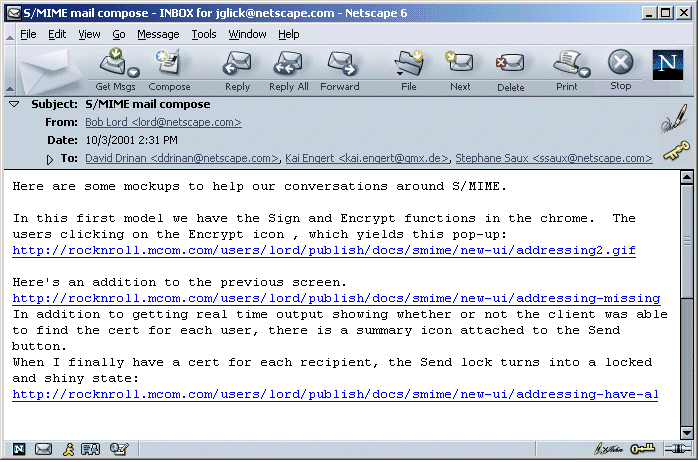
Feedback in envelope area. Encryption and/or signed icons displayed as appropriate (intacted or broken).
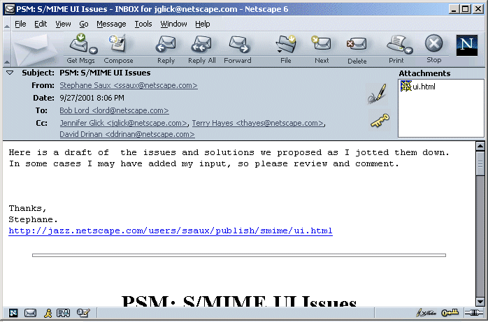
This section not yet discussed.
Only forward as attachment allowed?
Replying to and forwarding emails will cause the compose window to
start in the most restrictive state as specified by either the
replied-to or forwarded email or the encrypt preference.
So if the replied-to or forwarded email was encrypted, then
Option->security->"Always encrypt" is checked. If it wasn't
encrypted, then the setting is governed by the encrypt
preference.
There is value in knowing whether the original message was signed,
but it can only be done by keeping the original message intact
together with it's signature. This can only be accomplished if the
original message is delivered as an attachment. However, users may
wish to edit the message before sending it, which requires the
message to be inline. If the original message is inline, no statement
can be made as to whether it was originally signed.